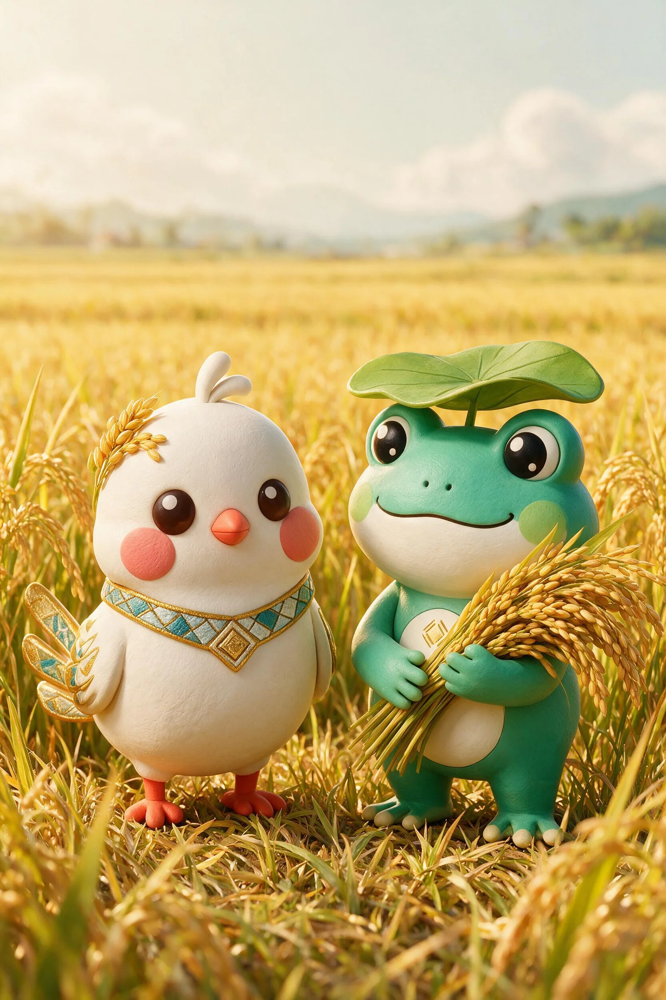
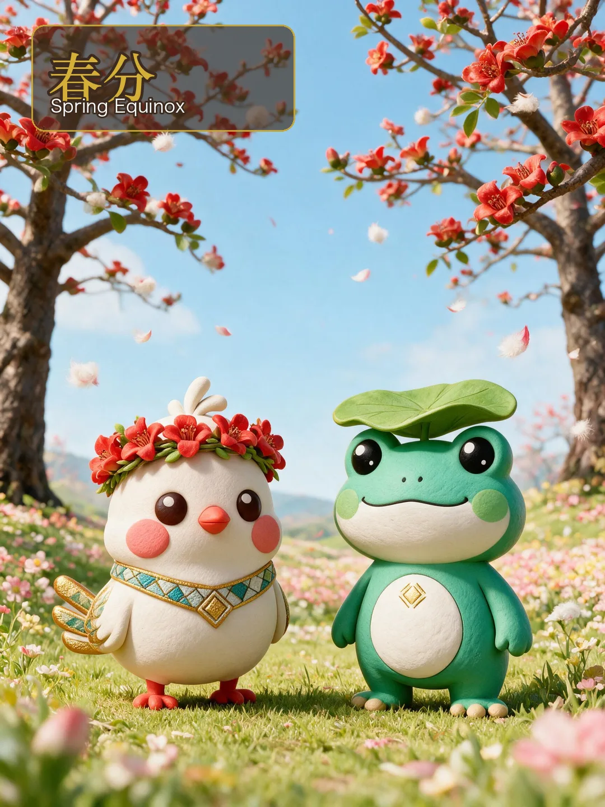

四季换装 · 节气海报 · 海南物候Wardrobe · Solar Terms · Hainan Calendar
四季 · 变装与节气海报Four Seasons & Solar Posters
春戴木棉花环，夏披椰叶斗笠，秋衔稻穗槟榔，冬裹黎锦围巾——甘米米和呱噜噜把海南的一年穿在身上，也把春分、夏至、秋分、冬至画进二十四节气海报。A kapok garland in spring, a palm-leaf hat in summer, harvest in autumn and a brocade scarf in winter — the duo wears a Hainan year, and paints the equinoxes and solstices into solar-term posters.



节气海报 · 中国人给时间写的诗Solar Posters · Poetry Written About Time
二十四节气是中国人观察太阳、感知物候的古老智慧。甘米米和呱噜噜用春分、夏至、秋分、冬至四个节点，把海南的一年画下来。The 24 solar terms are ancient wisdom of reading the sun and the seasons. Through four key terms, the duo draws a Hainan year.
